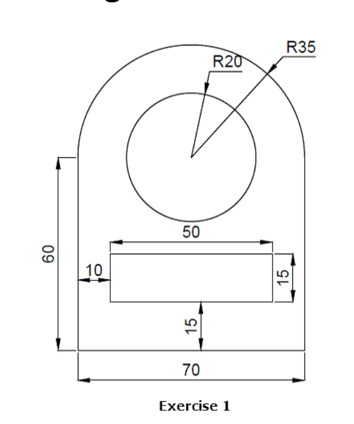
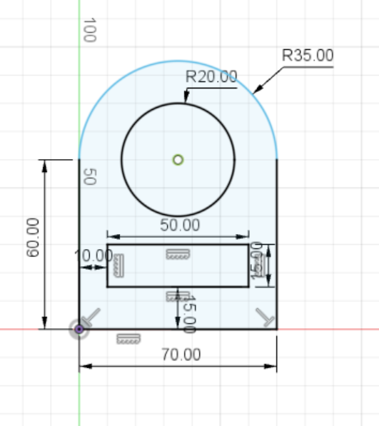
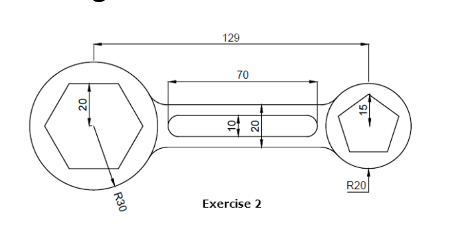
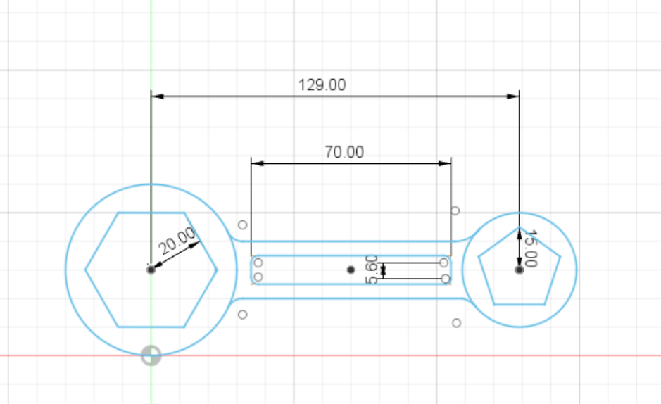

Went through the module map and assement brief for digital fabrication.
Took the FabLab Safety Programme.
Learn the importance of safety equipment and do and don't while in the lab. Also understanding the safety
hazard and level of the equipments in the FabLab.
Took the safety quiz, 80/100 overall.
There are three FabLab located in SP. Went in-depth with the tools available in the FabLab (e.g. 3D printer,
Laser Cutters, Routers & etc.) that can be use to make the product for this module.
After going through
this topic, i have a rough idea of the product i intend to produce (charging booth, crane machine and puzzle
toy).
The second half of this topic is about the software. The most important tools are the text editor and Fusion
360. I also pick a few essential (refer to Assigment page) to help ease my journey
for this module.
Created a folder to keep all the files in one place, create a copy for safekeeping. Created the most crucial file called index.html to kickstart the whole project. Added head,title,body and a paragraph for my first practice. Then i created the about.html, a page to describe myself. I took a selfie and pasted it in a table, that is filled with my personal particulars. To link both my file i created a hyperlink between both my two file. Also got introduce to w3school site that will help me expand my knowledge on HTML & CSS. To expand my webpage i created a documention page (project.html) and a assignment page (assignment.html).
Created a CSS file (mystyles.css) to make my webpage look nicer. Learn that CSS help break down the webpage into different sections (header,nav,div and footer). My first practice was to make my header look nicer, i change the font size and color and center the text with a padding of 30px. To familiarise myself with CSS coding, i created a new folder with a new index.html and css file. I followed the Jack Wright video to understand how to design a basic layout of a webpage. After that practice, i decided to implement a horizontal navigation bar. I followed the code from w3school, the only modificaton i made was making the corner rounder and bigger font.
Created a git account so that i could create a public webpage. I also learned that alot of software developers are currently using github to publish their projects. Github have many accessibilities that attract many users such as easy public domain url, retractability and cloud saving. Finding other users project is easier to due the simple url. Making mistake while coding can be easily erase and accidentally deleting a file can be easily retrace due to cloud saving. I can a repository to insert my files and create a public domain. I also learn the importace of a MIT license, it help creator to ensure that if anything goes wrong while other users are following their project, the creator will not hold any responsibility.
Continued working on my webpage, wrote the my first week entry on my projectpage. Also created a table for my first assignment.
Computer Aided Design is the computer technology process for creation, modificaton and analysis of a design. CAD is very popular amongst designers and engineers due to it being very accurate, easy to modify accidentally and the fact that it can be design in 2D or 3D in a matters of seconds. I have debble in CAD design in my year 1 of polytechnic, so i have some basic understanding of using Fusion360 & AutoCAD.
This week i wrote in my second week entry on the projectpage. Went on the internet to gets ideas on decorating my webpage. Learned about slideshows and animation using css. I then add in a sliding animation for my header of every page to gift it character. I also created a slideshow for my home page to summarise what my website is about.
Two design practice were shown, this is my attempt:
 |
 |
 |
 |
To start off a 3D model, we must first sketch up a 2D design of the model. After designing the sketch, we can first use the Constraints tool such as(Parallel,Perpendicular and etc.) to make sure the 2D design is accurate. Then we extrude the the sketch to the dimension we want. Finally we can use differents tools such as (Shell, Loft, Cut and etc.) to shape the object to the shape we intend it to be. The new thing i learned from this module is parametric design. By inserting specific dimension and naming it as a variable in the parameter scale. We can use this variables in our sketch. The reason why we use this tool is so that if we intend to change a specific dimension of the object, we can just change without backtracking the design but by changing the dimension in the parameter scale.
No modificaton made for webpage this week.
This is my practice for 3D Modelling:
Due to covid resistriction, classes were done online, which included this module. Unfortunately, we weren't allowed to go to the lab. From the online class we had, I learn alot about 3D Printers and the printing process. I learnt about the different 3D printers available in SP. To tranfer the file to a 3D printer we must first save as a STL.file, we use this file in CURA software and slice it into a gcode file. We also use the CURA software to predict how long the printing will last and the configuration of the 3D printer. We can also add support to prevent overhang and also platform adhesion so it easier to remove. I was also given an assignment to design and print a Knight Pieces(refer to Assigment page).
Made minor adjusment on webpage by changing the font and poistioning of some feaatures on the webpage.
After brushing up my skills on using 360Fusion, i can now comfortably design a 2D sketch with parametric design. With the use of parameteric design, i can design 3D sketch faster and make joints for two component easier. Joints can be made by using the Combine tools and selecting one component as the cutting tool while the other as the target body. After learning this, I can use this to make a laptop stand using parameteric design and the Combine tool. As an assignment, we were task to design a musical box(refer to Assigment page).
No modificaton made to webpage this week.
During the holiday, i started on my assignments. First assignment was the knight piece, in order to begin, i first started downloading a 2d picture so that i can apply it on the canvas tool. The canvas tool help me trace the design of the knight piece. I trace half of the base so that i could use the revolve tool. The revolve tool help create a 3D 360 degree base. Then i trace out the horse, which i then extrude after i am done. The dimension can be found Assigment page.
The second dimension is the music box, the music box must be fitted with a box joint. Box joint ensures that the sides of the box can held in place without the use of glue but by intersecting the sides. i also make full use of the parameteric design so that in case i wish to make an adjusment in the future, i can make it with ease. After designing the box, i projected each side and convert it to a dxf. file. Which i then import it into a software called libreCAD. LibreCAD help convert the box into a vector graphic which can be easily read by the laser cutting software.
For the website developments, i create boxes for my text and add shadows so it can be easily reveal. I alsi added "id" for each week so that i can use it as a hyperlink for my dropdown bar. Push it to my github, to ensure it can be seen by others and safekeeping of my data.
As soon as school reopen, we were task to laser cut the musical box. Due to covid restriction, there were limited amount of time and laser-cutter available. The software used to laser cut is CorelDraw. To begin laser-cutting, we must first prepare to canvas. First, we drag the node to the edge of canvas and the ruler 5mm into the canvas to form a guideline. We then import the sketch onto the canvas. We also have to make sure that the size of the drawing is hairline and to engrave insert an image or text. After preparing the sketch, we can now begin the printing process. First we must set the parametes for printing, we must turn on the auto focus. To cut through wood we must set the power to ...,speed to....,frequency to...., and the thickness of the wood. Also turn on air assist. We can then set the printer which is the final step. First press config to return the laser to the original position. Second, press jog to place the laser to place we intend to. Then we can press go, to start the laser cutting. Normally it advise to open the hatch to see if the material is sufficient without laser cutting.
After last week demo, i can now proceed to print the Music Box required for the assignment. Following the steps, i begin with importing my sketch into CorelDraw with the neccessary settings. Then on the printing page, i set the neccessary parametes to cut through the wood. The thickness of the wood is 3.6mm. Since the wood i used was recycled, i had to jog the laser head to position that is available. Then the cutting begins.
With the lab reopen, i can now 3D print the knight pieces. After saving it as a STL. file, i import it into CURA. The parameters to 3D print is as follows: Material-PLA, Nozzle-0.4mm, Layer Height-0.2mm, Wall Thickness-0.8mm, Wall Count-4, Infill-15%, Print Speed- 50nm/s, Support and Bed adhesion. I then splice and save it to a SD card. The SD card is then inserted into the 3D printer. Overall, the 3D printing took about 20 minute to finish printing. After the collecting my knight pieces, i remove and sand off the support of the knight piece. I also learn that to remove the access easier, i could use the a hair dryer and soften it for removal.
I was given a set of Arduino UNO, Mini BreadBoard, Resistors and LEDs. First i implant the Arduino Board and the Breadboard in order to operate the Arduino board, we must first program it on the software (Arduino IDE). The programming language is simillar to C++ language. After writing in the code, I then installed the LEDs and resistor on the breadboard and proceeded to wire it all up to the Arduino. The LEDs is the output while the switch is the input. I programme it so that each when the ultrasonic sensor senses something depending on the distance a red or blue light will appear.